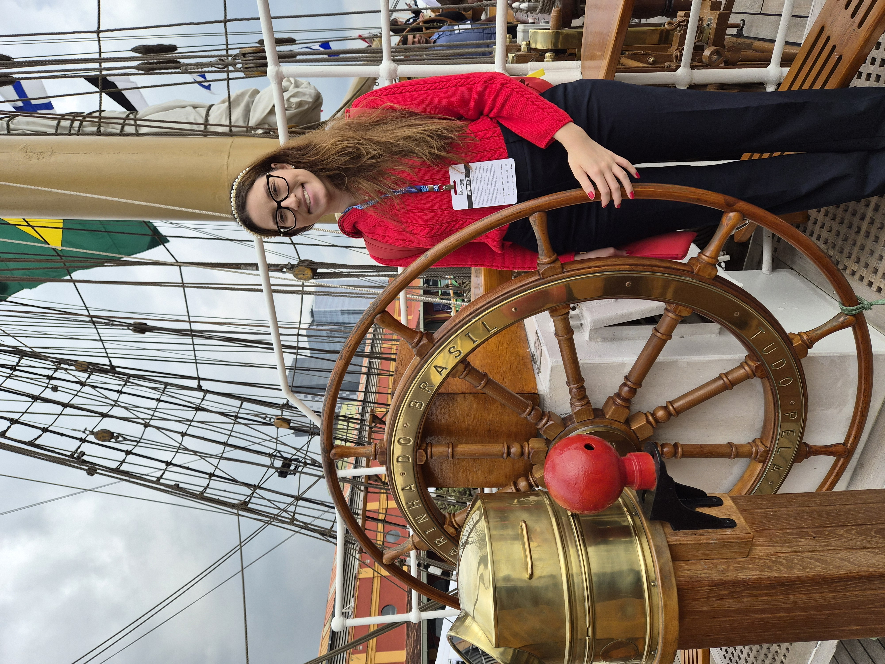

Undergraduate researcher at UFRJ focused on the intersection of structural integrity, operational efficiency, and the safety of offshore assets. Currently leveraging Python and Neural Networks to build Decision Support Systems for the offshore energy sector.

Core Competencies
Building real-world solutions
A comprehensive digital twin aimed at optimizing operability and safety of FPSO units in the pre-salt field. Retrains neural network committees in Python to analyze critical phenomena (sloshing, thermal plumes) for structural integrity assessments.
ANP RAA 2026 SELECTION * Selected to present technical findings at the upcoming ANP RAA 2026 (Annual Evaluation Meeting of the Brazilian National Petroleum Agency) — the premier national forum for technological innovation in oil, gas, and biofuels.
Co-Leader and Lead Naval Engineer for an off-grid Floating Hub ecosystem in the Amazon. Coordinated weekly cross-functional workflows and task assignments. Spearheaded the physical retrofitting of the modular hubs, executing rigorous AutoCAD 3D drafting, advanced material research, and structural stability modeling. Co-authored the comprehensive technical report to ensure resilience against extreme Amazonian flood pulses.
Developed a formal technological transfer proposal targeting Gazprom Neft Shelf and Rosatomflot to adapt the tropical framework for extreme ice-class stress at the Prirazlomnaya Platform.
View R&D DeckCo-authored and presented the paper "The Sea as an Invisible Infrastructure of the Economy" at the V International Olympiad on Financial Security in Krasnoyarsk, Russia. Bridged Naval Engineering with Geopolitics, analyzing how maritime trade mechanisms are exploited for Trade-Based Money Laundering (TBML) and the critical vulnerabilities of port cybersecurity.
Independent industrial design project utilizing AutoCAD. Designed a complete 3D wireframe and solid model of a quadcopter Unmanned Aerial Vehicle (UAV), demonstrating proficiency in spatial geometry, component assembly, and technical drafting.
Watch CAD RenderDemonstrated practical mastery of LLM interaction by developing a fully synthetic audiovisual project. Leveraged advanced prompt engineering to direct, generate, and synchronize high-fidelity video sequences and custom audio tracks.
Access BragBookCritical analysis evaluating shipowner strategies and the four major maritime economic cycles (freight, S&P, shipbuilding, demolition).
Developed a sustainable biological membrane system for water purification, aligning with ESG practices for the maritime sector.
View Written ReportB.Sc. in Naval & Ocean Engineering (7th Semester)
AUG 2022 - AUG 2028
Focusing on offshore structures, hydrodynamics, and maritime systems. Bridging physical engineering with AI through the PRH-04 Program (funded by ANP).
Tech & Management Exchange
JUL 2025 - JAN 2026
Coursework bridging technical coding foundations (Computer Programming) with strategic frameworks (Innovative Product Development).
Aspire Leaders Program
AUG - DEC 2025
Graduated as a finalist (top 18% of 54,000+ global applicants). Founded by Harvard Business School faculty.
Technical High School - Biotechnology
2019 - 2021
Specialized education focused on applied environmental sciences and complex laboratory procedures.
"She has established herself as a promising researcher with strong potential for academic and technical performance at an international level... demonstrating remarkable ability in integrating concepts of ocean engineering, computational modeling, and risk analysis."
Prof. Luiz Paulo Assad
Tech Coordinator, LAMCE/COPPE - UFRJ
"I emphatically recommend her not only for her excellent intellect but also for her upright character. She demonstrated an unwavering dedication to learning and academic excellence."
Prof. Dr. Gladys C. Silva
Assoc. Prof, Univ. of Amazonas / Escola ORT
"Ms. Tambasco has demonstrated a high level of understanding and notable ability in critical thinking and teamwork. She demonstrates a great ability to adapt and continually learn."
Prof. Dr. Angelo M. Gomes
Associate Professor, Physics Institute - UFRJ
"The student is proactive and presents a good capacity for communication... always seeking to have her doubts resolved and always available to assist with the doubts of other students."
Prof. Aline Freitas, M.Sc.
Assistant Professor, Graphic Expression - UFRJ
"Apart from her technical skills Anna Paula is also a very good student, with great academic performance. Our course is heavily focused on complex experimental procedures so group coordination is a necessity. She showed good group skills, always performing her tasks as intended."
Prof. Eduardo Gamosa de Oliveira
Head of Biotechnology Department, Escola ORT